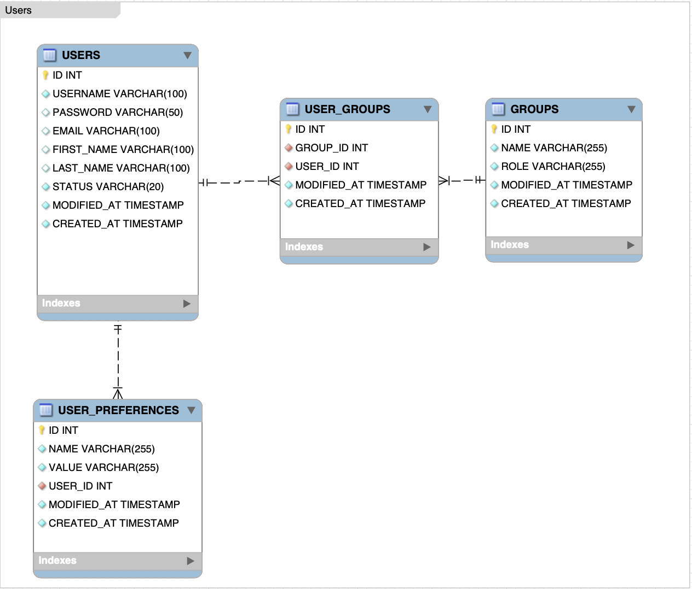

Database usage
Here is a simple DB schema that will be used for this sample:  We will implement mapping for Users and UserPreferences tables.
Dependencies
For integration with DB, we recommend to use MyBatis ORM framework. MyBatis is a first class persistence framework with support for custom SQL, stored procedures and advanced mappings. To start with, let's add the required dependencies into Maven pom.xml:
<dependency>
<groupId>org.mybatis</groupId>
<artifactId>mybatis</artifactId>
<version>3.5.2</version>
</dependency>
<!-- Postgres driver -->
<dependency>
<groupId>org.postgresql</groupId>
<artifactId>postgresql</artifactId>
<version>42.2.6</version>
</dependency>
<!-- MySQL driver -->
<dependency>
<groupId>mysql</groupId>
<artifactId>mysql-connector-java</artifactId>
<version>8.0.17</version>
</dependency>
Mappers
The next step is MyBatis mappers implementation, read the official documentation to understand all the details. Let's place all the mappers into src/main/resources/mappers. Here is a UserMapper.xml sample:
<?xml version="1.0" encoding="UTF-8"?>
<!DOCTYPE mapper PUBLIC "-//mybatis.org//DTD Mapper 3.0//EN" "http://mybatis.org/dtd/mybatis-3-mapper.dtd">
<mapper namespace="com.qaprosoft.carina.demo.db.mappers.UserMapper">
<insert id="create" useGeneratedKeys="true" keyProperty="id">
<![CDATA[
INSERT INTO carina.USERS (USERNAME, PASSWORD, FIRST_NAME, LAST_NAME, EMAIL, STATUS)
VALUES (
#{username},
#{password},
#{firstName},
#{lastName},
#{email},
#{status}
)
]]>
</insert>
<sql id="getUser">
<![CDATA[
SELECT
U.ID AS USER_ID,
U.USERNAME AS USER_USERNAME,
U.PASSWORD AS USER_PASSWORD,
U.FIRST_NAME AS USER_FIRST_NAME,
U.LAST_NAME AS USER_LAST_NAME,
U.EMAIL AS USER_EMAIL,
U.STATUS AS USER_STATUS,
UP.ID AS USER_PREFERENCE_ID,
UP.NAME AS USER_PREFERENCE_NAME,
UP.VALUE AS USER_PREFERENCE_VALUE,
UP.USER_ID AS USER_PREFERENCE_USER_ID
FROM
carina.USERS U
LEFT JOIN
carina.USER_PREFERENCES UP
ON
UP.USER_ID = U.ID
]]>
</sql>
<select id="findById" resultMap="UserResultMap">
<include refid="getUser" />
<![CDATA[
WHERE U.ID = #{id};
]]>
</select>
<select id="findByUserName" resultMap="UserResultMap">
<include refid="getUser" />
<![CDATA[
WHERE U.USERNAME = #{username};
]]>
</select>
<update id="update">
<![CDATA[
UPDATE
carina.USERS
]]>
<set>
<if test="null != firstName">
<![CDATA[
FIRST_NAME = #{firstName},
]]>
</if>
<if test="null != lastName">
<![CDATA[
LAST_NAME = #{lastName},
]]>
</if>
<if test="null != email">
<![CDATA[
EMAIL = #{email},
]]>
</if>
<if test="null != username">
<![CDATA[
USERNAME = #{username},
]]>
</if>
<if test="null != password">
<![CDATA[
PASSWORD = #{password},
]]>
</if>
</set>
<![CDATA[
WHERE
ID = #{id}
]]>
</update>
<delete id="delete">
<![CDATA[
DELETE FROM carina.USERS
WHERE ID = #{id}
]]>
</delete>
<resultMap type="com.qaprosoft.carina.demo.db.models.User"
id="UserResultMap" autoMapping="false">
<id column="USER_ID" property="id" />
<result column="USER_USERNAME" property="username" />
<result column="USER_PASSWORD" property="password" />
<result column="USER_FIRST_NAME" property="firstName" />
<result column="USER_LAST_NAME" property="lastName" />
<result column="USER_EMAIL" property="email" />
<result column="USER_STATUS" property="status" />
<collection property="preferences"
ofType="com.qaprosoft.carina.demo.db.models.UserPreference"
resultMap="com.qaprosoft.carina.demo.db.mappers.UserPreferenceMapper.UserPreferenceResultMap" />
</resultMap>
</mapper>
Now we have to implement a DB domain object User class which reflects the DB table structure:
package com.qaprosoft.carina.demo.db.models;
import java.util.ArrayList;
import java.util.List;
public class User {
private Long id;
private String username;
private String password;
private String email;
private String firstName;
private String lastName;
private Status status;
private List<UserPreference> preferences = new ArrayList<>();
public User() {
}
public enum Status {
ACTIVE, INACTIVE
}
public Long getId() {
return id;
}
public void setId(Long id) {
this.id = id;
}
public String getUsername() {
return username;
}
public void setUsername(String username) {
this.username = username;
}
public String getPassword() {
return password;
}
public void setPassword(String password) {
this.password = password;
}
public String getEmail() {
return email;
}
public void setEmail(String email) {
this.email = email;
}
public String getFirstName() {
return firstName;
}
public void setFirstName(String firstName) {
this.firstName = firstName;
}
public String getLastName() {
return lastName;
}
public void setLastName(String lastName) {
this.lastName = lastName;
}
public List<UserPreference> getPreferences() {
return preferences;
}
public void setPreferences(List<UserPreference> preferences) {
this.preferences = preferences;
}
public Status getStatus() {
return status;
}
public void setStatus(Status status) {
this.status = status;
}
}
Also, we have to describe the mapper interface, UserMapper interface:
package com.qaprosoft.carina.demo.db.mappers;
import com.qaprosoft.carina.demo.db.models.User;
public interface UserMapper {
void create(User user);
User findById(long id);
User findByUserName(String username);
void update(User user);
void delete(User user);
}
Configuration
First of all, we need to place DB credentials into src/main/resources/_database.properties:
#===============================================================#
#================== Database configuration ====================#
#===============================================================#
db.url=jdbc:postgresql://localhost:5432/postgres
db.driver=org.postgresql.Driver
db.user=postgres
db.pass=postgres
#db.url=jdbc:mysql://localhost:3306/mysql
#db.driver=com.mysql.jdbc.Driver
#db.user=mysql
#db.pass=mysql
All the mappers and reference to _database.properties should be specified in src/main/resources/mybatis-config.xml:
<?xml version="1.0" encoding="UTF-8" ?>
<!DOCTYPE configuration
PUBLIC "-//mybatis.org//DTD Config 3.0//EN"
"http://mybatis.org/dtd/mybatis-3-config.dtd">
<configuration>
<properties resource="_database.properties" />
<environments default="development">
<environment id="development">
<transactionManager type="JDBC" />
<dataSource type="POOLED">
<property name="driver" value="${db.driver}" />
<property name="url" value="${db.url}" />
<property name="username" value="${db.user}" />
<property name="password" value="${db.pass}" />
</dataSource>
</environment>
</environments>
<mappers>
<mapper resource="mappers/UserMapper.xml" />
<mapper resource="mappers/UserPreferenceMapper.xml" />
</mappers>
</configuration>
Connection factory
Connection factory is responsible for MyBatis context initialization and creation of mapper instances, take a look at the sample implementation of ConnectionFactory:
package com.qaprosoft.carina.demo.utils;
import java.io.IOException;
import java.io.Reader;
import org.apache.ibatis.io.Resources;
import org.apache.ibatis.session.SqlSessionFactory;
import org.apache.ibatis.session.SqlSessionFactoryBuilder;
import com.qaprosoft.carina.demo.db.mappers.UserMapper;
import com.qaprosoft.carina.demo.db.mappers.UserPreferenceMapper;
public class ConnectionFactory {
private static SqlSessionFactory factory;
static {
Reader reader = null;
try {
reader = Resources.getResourceAsReader("mybatis-config.xml");
} catch (IOException e) {
throw new RuntimeException(e.getMessage());
}
factory = new SqlSessionFactoryBuilder().build(reader);
}
public static SqlSessionFactory getSqlSessionFactory() {
return factory;
}
public static UserMapper getUserMapper() {
return ConnectionFactory.getSqlSessionFactory().openSession(true).getMapper(UserMapper.class);
}
public static UserPreferenceMapper getUserPreferenceMapperMapper() {
return ConnectionFactory.getSqlSessionFactory().openSession(true).getMapper(UserPreferenceMapper.class);
}
}
Usage sample
Finally, DBSampleTest illustrates the usage of MyBatis in tests:
package com.qaprosoft.carina.demo;
import static org.testng.Assert.assertEquals;
import static org.testng.Assert.assertNull;
import org.apache.ibatis.session.SqlSession;
import org.testng.annotations.Test;
import com.qaprosoft.carina.core.foundation.AbstractTest;
import com.qaprosoft.carina.demo.db.mappers.UserMapper;
import com.qaprosoft.carina.demo.db.mappers.UserPreferenceMapper;
import com.qaprosoft.carina.demo.db.models.User;
import com.qaprosoft.carina.demo.db.models.User.Status;
import com.qaprosoft.carina.demo.utils.ConnectionFactory;
import com.qaprosoft.carina.demo.db.models.UserPreference;
/**
* This sample shows how create DB test.
*
* @author qpsdemo
*/
public class DBSampleTest extends AbstractTest {
...
@Test
public void createUser() {
try (SqlSession session = ConnectionFactory.getSqlSessionFactory().openSession(true)) {
UserMapper userMapper = session.getMapper(UserMapper.class);
userMapper.create(USER);
checkUser(userMapper.findById(USER.getId()));
}
}
@Test(dependsOnMethods = "createUser")
public void createUserPreference() {
try (SqlSession session = ConnectionFactory.getSqlSessionFactory().openSession(true)) {
UserMapper userMapper = session.getMapper(UserMapper.class);
UserPreferenceMapper userPreferenceMapper = session.getMapper(UserPreferenceMapper.class);
USER_PREFERENCE.setUserId(USER.getId());
userPreferenceMapper.create(USER_PREFERENCE);
checkUserPreference(userMapper.findById(USER.getId()).getPreferences().get(0));
}
}
...
}